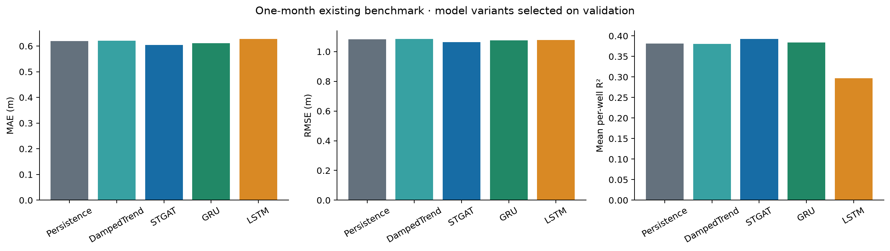

One-month variants are selected separately for each model using September 2015-February 2017 validation MAE. The table scores identical measured labels from the previously examined November 2017-January 2020 benchmark.
Across all tested neural variants, GRU trained for H=1 has the lowest benchmark MAE (0.600 m), with RMSE 1.095 m. The validation-selected STGAT has MAE 0.605 m and RMSE 1.064 m. This observed ranking does not change the predefined validation selections.
| model | training_horizon | validation_mae_m | n | scored_wells | mae_m | rmse_m | bias_m | macro_r2 | mae_skill_vs_persistence |
|---|---|---|---|---|---|---|---|---|---|
| Persistence | 1 | 0.6995 | 389 | 19 | 0.6192 | 1.0831 | 0.0665 | 0.3817 | 0.0000 |
| Seasonal | 1 | 2.6428 | 389 | 19 | 1.4042 | 2.1716 | 0.6969 | -4.2772 | -1.2680 |
| DampedTrend | 6 | 0.6979 | 389 | 19 | 0.6200 | 1.0844 | 0.0573 | 0.3804 | -0.0014 |
| STGAT | 1 | 0.6538 | 389 | 19 | 0.6046 | 1.0644 | -0.0187 | 0.3924 | 0.0234 |
| GRU | 6 | 0.6726 | 389 | 19 | 0.6104 | 1.0754 | -0.0083 | 0.3837 | 0.0141 |
| LSTM | 1 | 0.6585 | 389 | 19 | 0.6272 | 1.0786 | -0.0816 | 0.2970 | -0.0131 |

| model | training_horizon | selected | validation_mae_m | mae_m | rmse_m | macro_r2 |
|---|---|---|---|---|---|---|
| STGAT | 1 | True | 0.6538 | 0.6046 | 1.0644 | 0.3924 |
| STGAT | 6 | False | 0.6588 | 0.6053 | 1.0622 | 0.3950 |
| GRU | 1 | False | 0.6840 | 0.6001 | 1.0947 | 0.3779 |
| GRU | 6 | True | 0.6726 | 0.6104 | 1.0754 | 0.3837 |
| LSTM | 1 | True | 0.6585 | 0.6272 | 1.0786 | 0.2970 |
| LSTM | 6 | False | 0.6711 | 0.6094 | 1.0777 | 0.3895 |
Dedicated one-month experiment: all 18 original plot types plus horizon comparison
Six-month experiment: all 18 original plot types plus 1/3/6-month comparison
Detailed results and limitations · Both variants, without hiding unfavorable results · Validation selection record
Nominal prediction bands are calibrated on a separate period; spatial and temporal dependence limit coverage guarantees. Missing target labels are never scored.